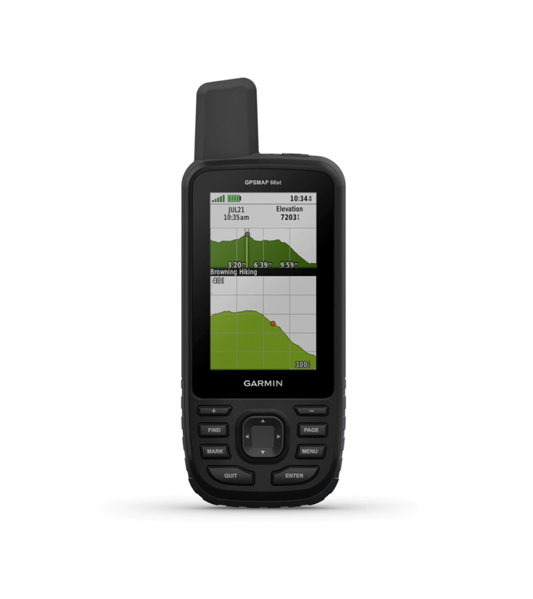
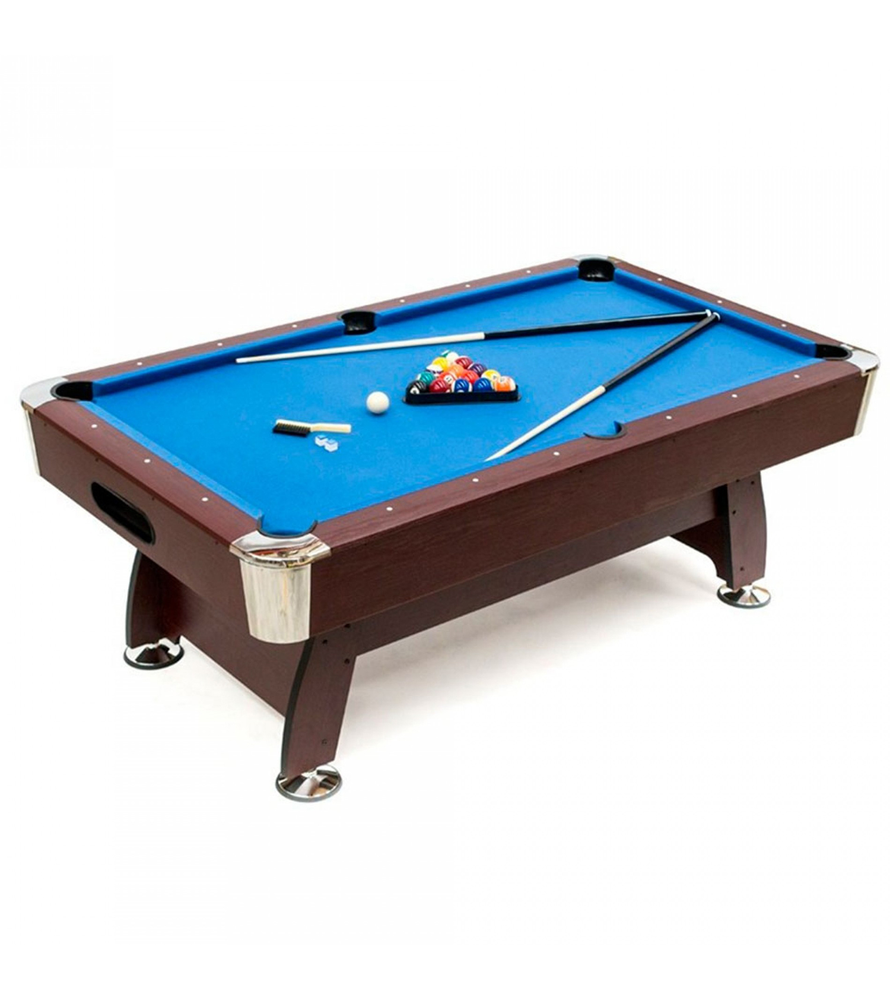
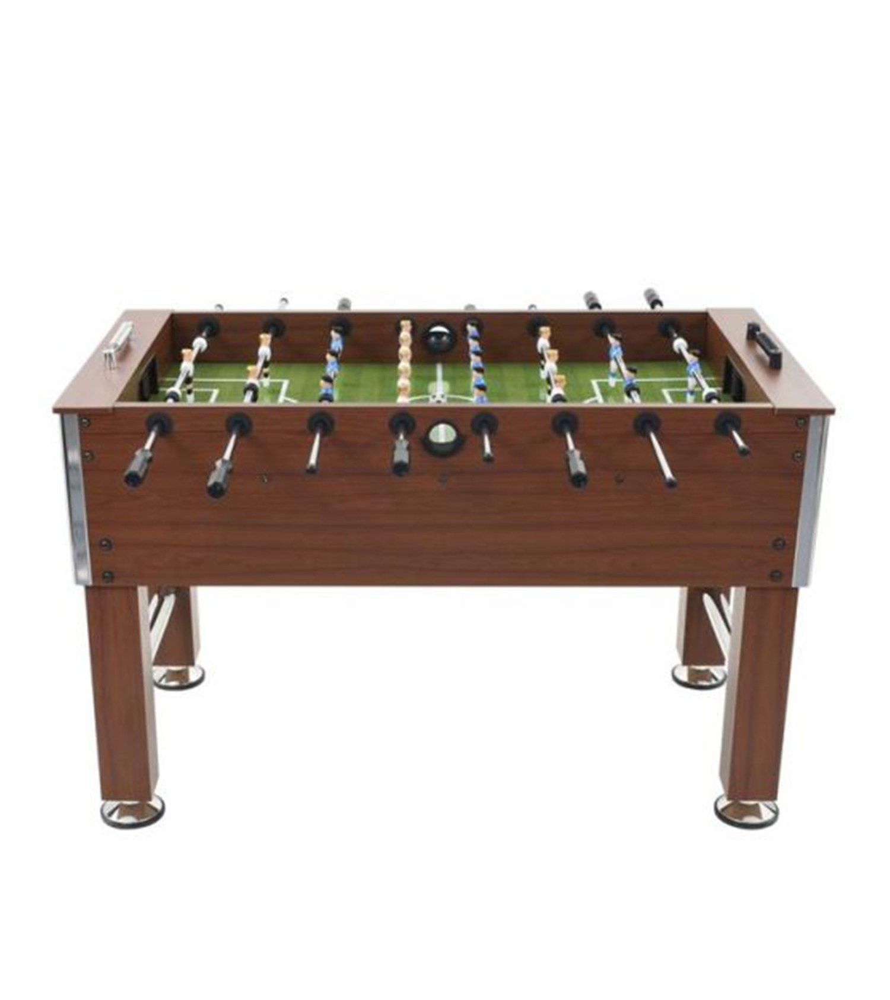

-
DEPORTES
-

En esta sección encontrarás las mejores herramienta para convertirte en la mejor versión de tí mismo

Lleva un sistema exclusivo de amortiguación aerodinámica con la cual logra que cada pisada sea lo más suave y de bajo impacto posible. La brillante pantalla digital de la cinta andadora Bluefin muestra velocidad, medidor de calorías, tiempo recorrido y distancia. Sensores de manos integrados para monitorear la frecuencia cardíaca. |

Soporta un peso aproximado de hasta 100 kg. El asiento y el manubrio ajustables ofrecen un espacio de conducción más amplio. Los pedales antideslizantes de la bicicleta están equipados con un soporte de bloqueo de pie ajustable y frenos de emergencia para que la experiencia de conducción sea más segura. El sistema de resistencia ajustable junto con el sistema de transmisión por cadena all-inclusive a ambos lados y la silenciosa polea con siete ranuras aseguran una experiencia de conducción increíblemente discreta y silenciosa. |

Entrenamiento de todo el cuerpo: Hombros, brazos, piernas, glúteos, abdominales y espalda. Función de pantalla de consola: Duración, ritmo al minuto, calorías y repeticiones.Resistencia ajustable para controlar tu ritmo de entrenamiento. 4 Pies con goma los cuales aumentan la estabilidad de la máquina de remo. Acero robusto de alta calidad el cual garantiza el uso seguro en casa |
En esta sección encontrarás las mejores herramienta para convertirte en la mejor versión de tí mismo

Alivio del dolor: El dispositivo digital de terapia del dolor TENS proporciona un alivio natural del dolor crónico sin efectos secundarios. Terapia del dolor: La unidad TENS está equipada con TENS y terapia EMS; puedes aplicarlo en tu cuello, hombros, brazos, manos, espalda, abdomen, caderas, piernas, pies y articulaciones. |

Admite archivos GPX de geocaching para descargar geocachés y otros datos directamente en la unidad. Al no utilizar papel, no sólo estás ayudando al medio ambiente, si no que hace tu geocaching más divertido. La unidad eTrex 10 almacena y muestra toda la información que necesitas, incluida la ubicación, el terreno, la dificultad, sugerencias y descripciones, por lo que ya no tendrás que introducir coordenadas manualmente ni llevar impresiones en papel. Basta con subir el archivo a la unidad y salir a buscar cachés. |

El monitor de frecuencia cardíaca puede monitorear de manera precisa y completa su estrés, proporcionando ejercicio de respiración, liberando el estado de ajuste del estrés y regresando a su mejor momento. El reloj rastreador de ejercicios está construido con dos sistemas de posicionamiento (GPS, GLONASS) juntos para detectar más satélites y aumentar la precisión del posicionamiento. |

Si te gusta hacer excursiones, montar fiestas en casa o simplemente quieres tener una mesa auxiliar extra para las comidas o cenas familiares, esta mesa de ping pong plegable 2 en 1 te va a encantar. Su altura es regulable en tres niveles distintos, por lo que se adapta tanto a niños como a adultos. Incluye un set de pelotas y palas de ping pong, por lo que podrás ponerte a jugar con ella cuando la recibas, sin preocuparte de tener que comprar nada más. |

Compra ya la mesa de billar semi profesional Akra, una de las mesas más grandes de nuestra colección y con retorno de bolas automático incorporado. Cuenta con detalles muy cuidados y está especialmente diseñada para ti. Además, ¡es la mesa de billar más vendida! |

Empieza el partido con el futbolín de madera. Elige a tu compañer@ de juego y marca el primer tanto. El futbolín incluye 2 pelotas para futbolín y marcadores manuales en las porterías de ambos equipos. Fabricado con cuerpo de madera resistente, las medidas del futbolín son 91x46x65 cm. Juguete recomendado a partir de 5 años, desarrolla la coordinación mano-ojo y el juego en equipo. |